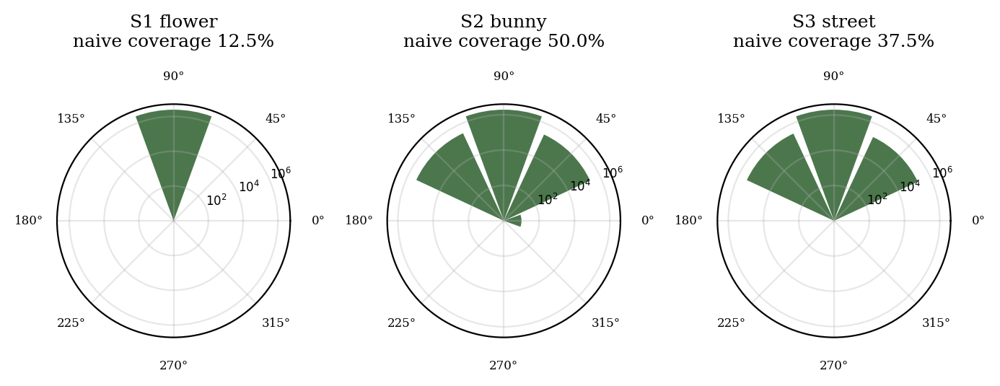
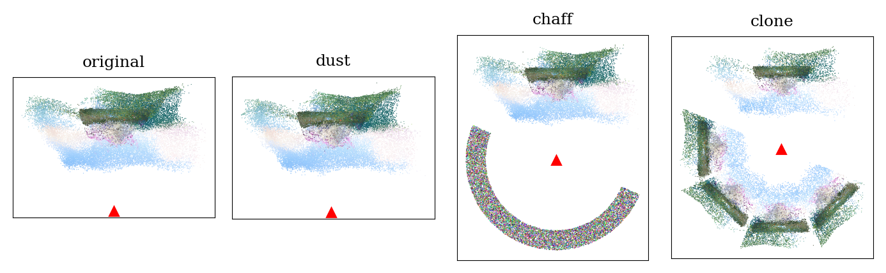
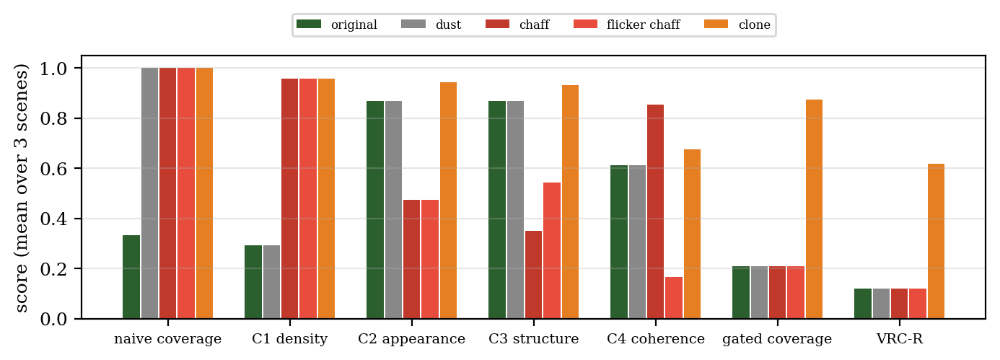
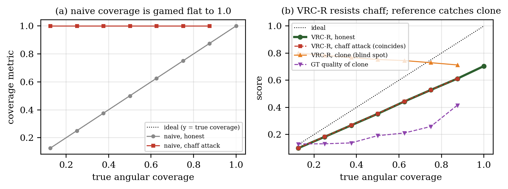
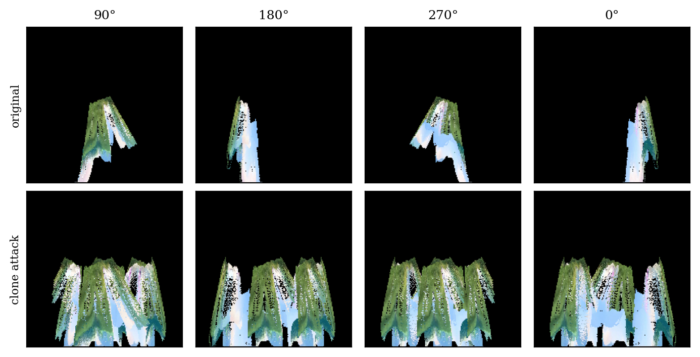

Generative 4D scene completion, synthesizing the unobserved regions of a dynamic scene reconstructed from monocular video, is an emerging task with no agreed evaluation protocol. Recent systems (Vivid4D, See4D, Fillerbuster) are evaluated by reconstruction fidelity at trajectory-adjacent views, which does not measure whether the unobserved portion of the viewing sphere has been completed at all. A natural alternative, adopted in several project-stage evaluation suites including our own, is angular coverage: count the test azimuths around the scene at which reconstructed geometry exists. We show that this family of metrics is critically unsound. First, on three real monocular depth-unprojection scenes (7,408,427 points total), a threshold-based coverage metric is flipped from 12.5–50.0% to 100% by inserting as few as 20 content-free points (“dust”), and re-centring the test sphere at the cloud centroid saturates coverage to 100% on every scene with no completion at all. Second, we formalize a taxonomy of degenerate completions (dust, volumetric chaff, temporally flickering chaff, and rotational clones) and show all of them defeat naive coverage. We then construct VRC-R, a reference-free metric suite combining relative-density coverage, appearance consistency, local-structure consistency, and temporal coherence of turntable renders, and show empirically that it resists dust, chaff, and flicker (mean attacked composite 0.12 vs. honest 0.12; the attacks buy nothing) while remaining monotonic in true coverage on ground-truth-controlled synthetic scenes (naive coverage under attack: flat at 1.0). Finally, we demonstrate a fundamental negative result: a rotational clone of observed content passes the reference-free suite (mean VRC-R 0.62, every per-sector gate passed on two of three scenes), yet reference-based quality against ground truth exposes it (quality 0.21 vs. 1.00 by construction for the true scene). Reference-free completeness metrics can certify that plausible-looking content exists everywhere; they cannot certify that it is correct. We release the audit suite, attacks, and metrics as a benchmark protocol for future 4D completion systems.
Monocular 4D reconstruction has advanced rapidly: D4RT [1] reconstructs dynamic scenes and camera poses from a single video at hundreds of FPS, and NeoVerse [2] produces feed-forward 4D Gaussian-Splat scenes from in-the-wild clips. Yet every reconstruction method, by design, recovers only what the camera saw. A monocular capture of a person from the front contains no information about their back; the corresponding region of the viewing sphere is empty. A growing body of work therefore targets generative completion of these unobserved regions: Vivid4D [3] inpaints depth-warped novel views with a video diffusion model, See4D [4] generates 4D scenes by autoregressive video inpainting, and Fillerbuster [5] completes large unknown regions of static casual captures with a multi-view latent diffusion model.
How should such completions be evaluated? Reconstruction benchmarks reward fidelity at views near the original trajectory (PSNR, SSIM, LPIPS [13] against held-out frames), which is silent about the far side of the scene, precisely the region completion is supposed to fill. The obvious alternative is some form of angular coverage: discretize the viewing sphere into test directions and check whether scene geometry exists at each. Coverage-style scores of exactly this form appear in project-stage evaluation tooling, including the Phase-0 evaluation suite of our own broader project (BARF), whose gap-detection module marks a 45° sector “covered” when it contains at least τ = 5 points.
This paper is an adversarial audit of that idea, in the spirit of known critiques of generative-image metrics such as the Inception Score [15] and FID [14], and of Goodhart's law: when a measure becomes a target, it ceases to be a good measure. Our question is concrete: if a 4D completion method were optimized (or merely selected) to maximize an angular coverage score, what is the cheapest thing that score would accept? The answer, we show, is: almost anything.
Contributions.
All experiments in this paper run on CPU (Apple Silicon) in under an hour, are fully deterministic (fixed seeds), and are reproducible with one script; every number is generated by committed code against committed data (Section 6, reproducibility statement).
D4RT [1] performs unified feed-forward 4D reconstruction and tracking from monocular video with an encoder–decoder transformer. NeoVerse [2] (CVPR 2026) trains a feed-forward 4D Gaussian-Splat [12] model on in-the-wild monocular clips and supports bounded multiview re-rendering near the source trajectory. 4C4D [10] extends 4DGS to sparse multi-camera rigs. None of these methods synthesize geometry for viewing directions the camera never observed, which is the regime our audit targets.
Vivid4D [3] reformulates view augmentation as video inpainting: observed frames are warped to novel viewpoints via monocular depth and a diffusion model inpaints the disocclusions; the goal is reconstruction quality at trajectory-adjacent views. See4D [4] generates 4D scenes from unposed video by autoregressive spatio-temporal inpainting. SeeU [9] targets unseen-region generation with dynamics-aware disentanglement. Fillerbuster [5] completes static casual captures with a multi-view latent diffusion transformer. Lyra 2.0 [8] and SceneCompleter [11] generate explorable static 3D scenes; LaVR [7] re-renders novel trajectories conditioned on a latent 4D representation. All of these are evaluated with image-fidelity metrics at views near the input trajectory; none reports an omnidirectional completeness measure. Our audit is complementary to all of them: it concerns how the completion task should be scored, not how to perform it.
Generative-model metrics have a history of post-hoc audits: the Inception Score was shown to be gameable and statistically fragile [15], and FID [14] inherits ImageNet biases. LPIPS [13] measures perceptual similarity but requires a reference. To our knowledge no prior work has audited completeness metrics for 3D/4D generative scene completion; the closest precedent is the internal red-team analysis of our own project, which conjectured that a coverage–coherence composite creates self-defeating optimization pressure. This paper turns that conjecture into a measured, attack-by-attack result.
We use the three Phase-0 scenes produced by our project's Colab evaluation pipeline in June 2026, and we begin with an audit of what those artifacts actually are, because honest provenance turns out to matter for metric design. Each scene ships as a PLY labelled “exported from NeoVerse reconstructor.” The point counts tell a different story: every cloud contains within 240 points of 392 × 252 × 25 = 2,469,600 points (Table 1): exactly one point per pixel per frame at the pipeline's internal resolution. These artifacts are therefore per-pixel monocular depth unprojections of 25 video frames (2.5D depth sheets fused across time), not optimized 4D Gaussian-Splat reconstructions. We use them as representative of the geometry distribution a monocular pipeline produces (a partial shell facing the camera), which is the input regime any completion metric must handle, and we refer to them as depth-unprojection scenes throughout.
| Scene | Source video | Points | W×H×T | Δ | Frames |
|---|---|---|---|---|---|
| S1 flower | MDN flower test clip | 2,469,517 | 2,469,600 | 83 | 25 |
| S2 bunny | Big Buck Bunny excerpt | 2,469,369 | 2,469,600 | 231 | 25 |
| S3 street | SampleLib 5s clip | 2,469,541 | 2,469,600 | 59 | 25 |
Table 1:
Provenance audit of the Phase-0 scene artifacts. Every cloud's point count
equals width×height×frames minus a small number of invalid-depth
pixels (Δ), identifying the artifacts as per-pixel depth unprojections
rather than optimized 4DGS reconstructions. Artifact: results/session/provenance.json.
Each point carries position, RGB colour, and a frame index t ∈ {0,…,24}; the capture camera sits at the origin of each cloud's coordinate frame. Scene representation throughout the paper: S = (X ∈ ℝN×3, C ∈ {0..255}N×3, t ∈ ℤN).
The audited metric is the one implemented in our project's Phase-0 evaluation suite (and representative of density-threshold coverage checks generally). Fix a centre c, discretize azimuth into eight 45° sectors Θ = {0°,45°,…,315°}, and call sector θ covered when at least τ points fall inside it:
Covnaive(S) = (1/|Θ|) Σθ ℹ[ |{ i : azim(xi − c) ∈ θ ± 22.5° }| ≥ τ ], τ = 5.
On the three depth-unprojection scenes, with c at the capture camera, Covnaive reports 12.5%, 50.0%, and 37.5% respectively (Figure 1): the honest diagnosis that motivated generative completion in the first place: most of the viewing sphere has no geometry at all.

Figure 1:
Capture-centred angular point-density profiles (log10 count per
45° sector) of the three depth-unprojection scenes. Grey sectors are
empty. The monocular frustum populates 1–4 of 8 sectors; the rest of
the sphere contains nothing to render. Generated by
scripts/make_figures.py from results/session/diagnostic.json.
Before any adversary appears, the metric already fails under an innocuous implementation choice. The sphere centre c is a free parameter; a natural-looking choice is the point-cloud centroid (“orbit the scene”). But a fronto-parallel depth sheet is a slab in space, and its centroid lies inside the slab: points then surround the centre at every azimuth, and coverage saturates. Empirically, centroid-centred Covnaive is 100% on all three scenes, and so is the relative-density variant C1 introduced below (1.00 on all scenes), even though nothing was completed and a VR user walking behind the sheet would see a hollow shell. Capture-centred measurement, which asks “in how many directions from the capture point does geometry exist,” reports 12.5–50.0%. All subsequent experiments therefore centre the sphere at the capture camera. The lesson generalizes: a completeness metric must specify its centre as part of the metric definition, not leave it to the evaluator.
We now play the adversary, with attacks ordered by increasing sophistication.
Each takes a partial scene and returns a “completed” scene with
points in every empty sector; none performs any generative modelling. All are
deterministic given a seed (implementation:
src/attacks/degenerate_completions.py).

Figure 2:
Top-down (XZ) views of scene S2: original depth-unprojection sheet, then
dust, chaff, and clone “completions.” The red triangle marks the
capture camera. Every variant after the first scores 100% on naive coverage.
Generated by scripts/make_figures.py (attacks regenerated with
the experiment seed).
Result. Every attack flips Covnaive to 100% on all three scenes (Table 2). Dust does so with 20 points on S2. A metric that a few dozen points can saturate cannot anchor a benchmark, let alone a training objective.
We construct four reference-free sub-metrics, each targeting one attack
family, and combine them multiplicatively (any sub-metric near zero collapses
the composite, intentional, since a scene that fails any one test is
not VR-complete). Implementation: src/metrics/robust_vrc.py.
A sector counts as covered only if it holds a meaningful fraction of the cloud: count ≥ ρ · N/8 with ρ = 0.10. Thresholds expressed in absolute points (τ) are scale-dependent and dust-gameable; thresholds relative to the uniform share are not.
Per sector, an 8×8×8 RGB histogram is compared by Jensen–Shannon divergence to a reference sector; the score is 1 − JS averaged over populated sectors. The reference is the most surface-like (smallest mean nearest-neighbour distance) sector among those holding ≥25% of the maximum sector count; selecting the reference by density alone is itself gameable by density-matched chaff, a failure we hit and fixed during the audit.
Real reconstructed geometry is locally a surface: nearest-neighbour distances are small relative to point count. Volumetric chaff at the same density has systematically larger nearest-neighbour distances. Per sector we compute the mean nearest-neighbour distance over a 5,000-point subsample (after removing exact duplicates: replicating one point set across frames adds no geometry and must not lower the statistic) and score nnref / max(nnsector, nnref).
Each frame's sector content is rendered at its azimuth with an orthographic z-buffered point splatter (96×96, CPU); coherence at an azimuth is the mean Pearson correlation between consecutive frames over pixels lit in either frame, clipped to [0,1]. Every clause of that definition was forced by an attack during the audit. Whole-scene renders let static filler in one sector dilute the flicker statistic at every other azimuth. Without the lit-pixel restriction, a small flickering wedge hides behind black background (a 4%-silhouette flicker sector measured frame-difference MAE 0.013 vs. 0.33 silhouette-normalised). And difference-magnitude statistics conflate motion with noise: silhouette-normalised MAE of genuine video motion in our scenes reaches 0.27, barely below the 0.33 of per-frame random noise, zeroing honest scenes under any fixed threshold. Correlation separates them cleanly: consecutive-frame correlation is 0.37–0.90 for real scene content and ≈0.00 for resampled chaff.
Our first composite was the obvious one: the product of the four sub-metric means. It leaks. Chaff saturates C1 (8/8 dense sectors) while C2/C3 means average the damage over sectors, and on ablated synthetic scenes the product composite under chaff exceeded the honest score (0.19 vs. 0.12 at true coverage 1/8): the attack profited. The audited composite instead gates per sector: a sector counts toward coverage only if it passes the density test and scores ≥0.5 on both appearance and structure; coherence is then averaged over passing sectors only:
VRC-R(S) = GatedCoverage(S) × C4passing(S)
An attacked sector that fails any test contributes exactly nothing, so an attack can no longer profit by quantity. When ground truth exists (synthetic scenes, dual-camera captures), we additionally compute Q: PSNR-mapped quality of turntable renders against ground-truth renders at the originally-empty azimuths. Q is what reference-free metrics cannot replace (Section 6.3).
All experiments run via scripts/run_all_experiments.py (CPU-only;
4.0 minutes end-to-end on an Apple Silicon laptop) with seed
0; raw outputs are committed under results/session/. Figures are
produced by scripts/make_figures.py. The unit-test suite covering
the attacks and metrics (135 tests) passes with
python3 -m pytest tests/.
| Scene / variant | +pts | naive | C1 | C2 | C3 | C4 | gated | VRC-R |
|---|---|---|---|---|---|---|---|---|
| S1 | – | 0.12 | 0.12 | 1.00 | 1.00 | 0.90 | 0.12 | 0.11 |
| S1 +dust | 35 | 1.00 | 0.12 | 1.00 | 1.00 | 0.90 | 0.12 | 0.11 |
| S1 +chaff | 17,286,500 | 1.00 | 1.00 | 0.42 | 0.27 | 0.99 | 0.12 | 0.12 |
| S1 +flicker | 17,286,500 | 1.00 | 1.00 | 0.42 | 0.54 | 0.12 | 0.12 | 0.12 |
| S1 +clone | 17,286,619 | 1.00 | 1.00 | 1.00 | 0.99 | 0.92 | 1.00 | 0.92 |
| S2 | – | 0.50 | 0.38 | 0.66 | 0.71 | 0.47 | 0.12 | 0.07 |
| S2 +dust | 20 | 1.00 | 0.38 | 0.66 | 0.71 | 0.47 | 0.12 | 0.07 |
| S2 +chaff | 1,069,700 | 1.00 | 0.88 | 0.46 | 0.38 | 0.77 | 0.12 | 0.07 |
| S2 +flicker | 1,069,700 | 1.00 | 0.88 | 0.46 | 0.51 | 0.20 | 0.12 | 0.07 |
| S2 +clone | 7,737,920 | 1.00 | 0.88 | 0.86 | 0.87 | 0.54 | 0.62 | 0.37 |
| S3 | – | 0.38 | 0.38 | 0.94 | 0.89 | 0.47 | 0.38 | 0.17 |
| S3 +dust | 25 | 1.00 | 0.38 | 0.94 | 0.89 | 0.47 | 0.38 | 0.17 |
| S3 +chaff | 1,435,875 | 1.00 | 1.00 | 0.54 | 0.41 | 0.80 | 0.38 | 0.17 |
| S3 +flicker | 1,435,875 | 1.00 | 1.00 | 0.54 | 0.57 | 0.18 | 0.38 | 0.17 |
| S3 +clone | 10,038,865 | 1.00 | 1.00 | 0.98 | 0.94 | 0.57 | 1.00 | 0.57 |
Table 2:
Gameability audit, capture-centred, all three real scenes. Naive coverage is
gamed to 1.00 by every attack. VRC-R holds dust at the honest baseline
(C1 unchanged), suppresses chaff via C2/C3, and additionally punishes flicker
via C4. The clone largely passes the reference-free suite (all gates on S1
and S3): the documented blind spot. Artifact:
results/session/attack_table.json.

Figure 3:
Sub-metric and composite scores averaged over the three scenes. Each attack
family is caught by the sub-metric designed for it (dust by C1, chaff by
C2+C3, flicker additionally by C4); the clone is caught by none.
From results/session/attack_table.json.
Three observations. First, dust leaves every robust sub-metric essentially untouched: C1 simply refuses to count the dusted sectors, so the composite stays at the honest-scene level. Second, chaff is rejected twice over: random colours collapse C2 to ~0.47 and volumetric structure collapses C3 to ~0.35, so even chaff painted with plausible colours would fail. Third, the flicker variant additionally drops C4 from 0.85 (static chaff) to 0.17, isolating temporal instability as an independently measurable failure: the red-team's “coverage–coherence paradox” is real but measurable, not paradoxical.
A metric must not only resist attacks; it must track the quantity it claims to measure. We build a synthetic scene that is complete by construction: a cylindrical surface band carrying a high-frequency procedural texture whose per-sector colour histograms are nearly identical (satisfying C2's stationarity assumption) while its spatial phase is azimuth-unique (so cloned content is provably wrong under reference comparison), plus an orbiting bright marker providing temporal dynamics (400,000 points, 10 frames), then ablate it to known true coverage k/8, k = 1…8, and score every ablation honestly and under attack.

Figure 4:
Metric response vs. true angular coverage on the synthetic scene.
(a) Naive coverage tracks truth when honest but is gamed flat to 1.0 by
chaff at every ablation level. (b) VRC-R is monotonic in true coverage,
stays near the honest value under chaff, but is inflated by the clone
(orange), which ground-truth quality at the ablated angles (purple,
Q ≈ 0.13–0.42) exposes. Artifact:
results/session/synthetic_validation.json.
Honest VRC-R increases from 0.10 at true coverage 1/8 to 0.70 at 8/8 (Spearman ρ = 1.00 across the eight ablation levels), while naive coverage under chaff attack is constant at 1.0 across all levels, carrying zero information about the underlying scene. Chaff-attacked VRC-R stays within 0.002 of the honest value at every level: the attack buys essentially nothing. The honest curve sits below the ideal diagonal because C4 charges genuine scene dynamics (the orbiting marker) a small coherence cost, a conservative bias we accept, discussed in Section 8.
The clone attack produces temporally coherent, structurally real, chromatically real content: it is, after all, real content, in the wrong place. On real scenes it scores mean VRC-R 0.62 (vs. 0.12 for the honest originals), passing every per-sector gate on S1 and S3 (gated coverage 1.00; on S2 a minority of cloned sectors trip the appearance gate against that scene's heterogeneous content); on the synthetic scenes it tracks near the full-scene score at every ablation level. No reference-free statistic we constructed reliably separates it from a correct completion, and we conjecture none can in general: the clone differs from a valid completion only in being wrong about the world, which is not a property of the point cloud alone. With ground truth available, the failure is obvious: reference-based quality at the ablated angles is 0.21 for the clone, versus 1.00 by construction when the true content is present (Figure 4b, purple).

Figure 5:
Turntable renders (middle frame) of scene S2 at 90°, 180°, 270°,
0°: original (top) vs. clone-completed (bottom). The clone fills every
azimuth with photometrically and structurally plausible content that no
reference-free metric in this paper (or, we argue, any) can
flag as wrong. Generated by scripts/make_figures.py.
Implications for completion methods. Vivid4D, See4D, and Fillerbuster each report image-fidelity metrics at views near the input trajectory. Our results suggest a concrete protocol upgrade for this line of work: (i) report capture-centred VRC-R on the full sphere, so that “the method completed the scene” is a measured claim rather than a rendered teaser; (ii) report it alongside attacks: a benchmark that publishes its attack suite makes metric-gaming a falsifiable accusation rather than a suspicion; (iii) where any ground truth exists, report reference-based quality at the unobserved angles separately from trajectory-adjacent fidelity, because the two measure different things.
On the red-team objections. This work began as a response to an internal anti-feasibility analysis of our own completion project. Two of its objections are confirmed and quantified here: the coverage–coherence optimization tension (measurable as C1 vs. C4, Section 6.1) and the under-determination of unobserved 4D content (the clone result, Section 6.3: plausibility is checkable, correctness is not, so unconstrained generative completion cannot be verified reference-free, only falsified). The audit framework is exactly the re-scope that analysis recommended, executed with attacks it did not anticipate (dust, centring).
What this paper does not do, stated plainly. (1) The three real test scenes are per-pixel depth unprojections from a Colab pipeline, not optimized 4DGS reconstructions; no GPU reconstruction (NeoVerse, D4RT) or diffusion completion (Vivid4D, See4D, Fillerbuster) was run in this work, so we audit the metrics, not those systems' outputs. (2) Three real scenes and one synthetic family is a small testbed; the attack results are uniform across it, but broader scene diversity could expose new failure modes. (3) C4 uses silhouette-normalised MAE between point-splat renders as a flicker proxy rather than LPIPS, renders are low-resolution (96×96) orthographic splats, and any frame-difference statistic conflates genuine motion with flicker, so dynamic scenes pay a small coherence cost (visible as the gap below the ideal diagonal in Figure 4b); perceptual coherence in a real VR headset was not measured. (4) C2 assumes approximate azimuthal stationarity of appearance: during the design of the synthetic validation we observed that low-frequency azimuth-dependent textures can push genuine sectors below the appearance gate. Scenes with strongly view-dependent appearance need the per-sector diagnostics inspected, not just the composite. (5) Coverage is azimuthal (8 sectors); the elevation dimension and full S² sampling are untested. (6) No VR hardware was used and no human study was run; nothing in this paper supports claims about presence, comfort, or frame rate on any headset. (7) Our conjecture that no reference-free statistic separates clones from correct completions is supported empirically, not proved; a learned scene prior might flag implausible symmetries even without references.
We audited the evaluation foundation of generative 4D scene completion before the field standardizes one. Naive angular coverage (the obvious metric, and the one our own project shipped) is defeated by five points per sector, by its own centring parameter, and by every degenerate completion we constructed. The audited replacement, VRC-R, is empirically monotonic in true completeness and resistant to dust, chaff, and flicker; and the one attack that defeats it defeats, we argue, all reference-free evaluation, delimiting what such metrics can ever certify. The attacks, metrics, and protocol are released as a benchmark suite so that future completion systems can be scored against adversaries rather than against hope.
[1] Zhang et al. D4RT: Efficiently Reconstructing Dynamic Scenes One D4RT at a Time. arXiv:2512.08924, 2025.
[2] NeoVerse: Enhancing 4D World Model with in-the-wild Monocular Videos. CVPR 2026. arXiv:2601.00393, 2026.
[3] Huang et al. Vivid4D: Improving 4D Reconstruction from Monocular Video by Video Inpainting. ICCV 2025. arXiv:2504.11092, 2025.
[4] See4D: Pose-Free 4D Generation via Auto-Regressive Video Inpainting. arXiv:2510.26796, 2025.
[5] Weber et al. Fillerbuster: Multi-View Scene Completion for Casual Captures. arXiv:2502.05175, 2025.
[6] Teed and Deng. RAFT: Recurrent All-Pairs Field Transforms for Optical Flow. ECCV 2020. arXiv:2003.12039, 2020.
[7] LaVR: Scene Latent Conditioned Generative Video Trajectory Re-Rendering using Large 4D Reconstruction Models. arXiv:2601.14674, 2026.
[8] Lyra 2.0: Explorable Generative 3D Worlds. NVIDIA Research. arXiv:2604.13036, 2026.
[9] SeeU: Seeing the Unseen World via 4D Dynamics-aware Generation. arXiv:2512.03350, 2025.
[10] 4C4D: 4D Gaussian Splatting from Extremely Sparse Cameras. arXiv:2604.04063, 2026.
[11] SceneCompleter: Dense 3D Scene Completion for Generative Novel View Synthesis. arXiv:2506.10981, 2025.
[12] Kerbl et al. 3D Gaussian Splatting for Real-Time Radiance Field Rendering. SIGGRAPH 2023. arXiv:2308.04079, 2023.
[13] Zhang et al. The Unreasonable Effectiveness of Deep Features as a Perceptual Metric. CVPR 2018. arXiv:1801.03924, 2018.
[14] Heusel et al. GANs Trained by a Two Time-Scale Update Rule Converge to a Local Nash Equilibrium. NeurIPS 2017. arXiv:1706.08500, 2017.
[15] Barratt and Sharma. A Note on the Inception Score. arXiv:1801.01973, 2018.